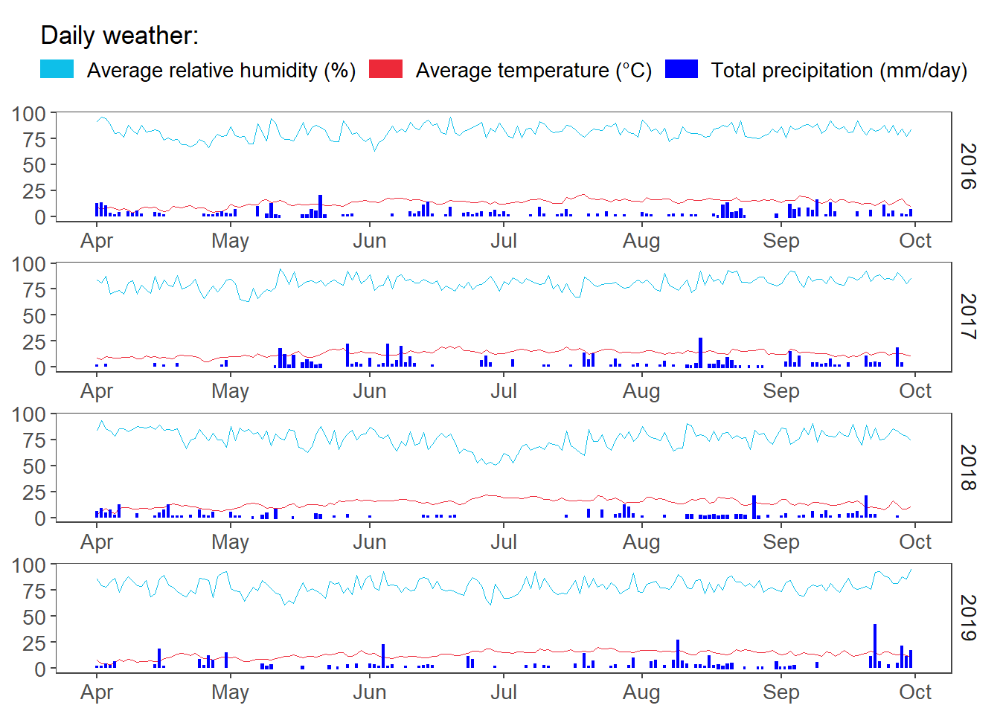

list.of.packages <-
c(
"tidyverse",
"devtools",
"egg",
"ggpubr",
"zoo",
"kableExtra",
"conflicted",
"here",
"lubridate"
)
new.packages <-
list.of.packages[!(list.of.packages %in% installed.packages()[, "Package"])]
#Download packages that are not already present in the library
if (length(new.packages))
install.packages(new.packages)
packages_load <-
lapply(list.of.packages, require, character.only = TRUE)
#Print warning if there is a problem with installing/loading some of packages
if (any(as.numeric(packages_load) == 0)) {
warning(paste("Package/s: ", paste(list.of.packages[packages_load != TRUE], sep = ", "), "not loaded!"))
} else {
print("All packages were successfully loaded.")
}## [1] "All packages were successfully loaded."rm(list.of.packages, new.packages, packages_load)
conflict_prefer("year", "lubridate")
conflict_prefer("filter", "dplyr")
#if instal is not working try
#install.packages("ROCR", repos = c(CRAN="https://cran.r-project.org/"))df <-
read_csv(
here::here("data", "weather" , "hly375.csv"),
col_types = cols(
clamt = col_skip(),
clht = col_skip(),
vis = col_skip(),
w = col_skip(),
ww = col_skip()
),
skip = 17
)
df$date <-
lubridate::dmy_hm(df$date)
df<- add_column(df, short_date = as.Date(df$date), .after=1)
df<- add_column(df, year = year(df$date), .after=2)
df<- add_column(df, month = month(df$date), .after=3)
df<- add_column(df, day = day(df$date), .after=4)
infil_gap <- 8 #Maximum length of the infill gap
df$temp <-
round(na.spline(df$temp, na.rm = FALSE, maxgap = infil_gap), 1)
df$rhum <-
round(na.spline(df$rhum, na.rm = FALSE, maxgap = infil_gap), 0)
df$rhum <- sapply(df$rhum, function(x)
ifelse(x > 100, x <- 100, x))
df <-
df %>%
filter(year %in% 2016:2019)%>%
filter(month %in% c(4:9))
#Check if the imputation worked
df %>%
summarize(
NA_rain = sum(is.na(rain)),
NA_temp = sum(is.na(temp)),
NA_rhum = sum(is.na(rhum))
)%>%
kable(format = "html") %>%
kableExtra::kable_styling(latex_options = "striped",full_width = FALSE)| NA_rain | NA_temp | NA_rhum |
|---|---|---|
| 2 | 0 | 0 |
#Only two missing values for rain should not be a problem, so we will just do a linear interpolation
df$rain <-
round(na.approx(df$rain, na.rm = FALSE, maxgap = infil_gap), 1)
df %>%
group_by(year, month, short_date) %>%
summarize(temp = round(mean(temp),1),
rain = sum(rain),
rhum = round(mean(rhum),1)
) %>%
mutate(rain = ifelse(rain == 0, NA, rain)) %>%
rename(date = short_date) %>%
ggplot() +
# geom_hline(aes())
geom_line(
aes(
x = date,
y = rhum,
color = "Average relative humidity (%)",
fill = "Average relative humidity (%)"
),
size = 0.25
) +
geom_line(aes(
x = date,
y = temp,
colour = "Average temperature (˚C)",
fill = "Average temperature (˚C)",
),
size = 0.25) +
geom_col(
aes(date,
rain,
colour = "Total precipitation (mm/day)",
fill = "Total precipitation (mm/day)"),
size = .8 ,
inherit.aes = TRUE,
width = 0.03
) +
scale_colour_manual(
"Daily weather:",
values = c(
"Average relative humidity (%)" = "#0EBFE9",
"Average temperature (˚C)" = "#ED2939",
"Total precipitation (mm/day)" = "blue"
)
) +
scale_fill_manual(
"Daily weather:",
values = c(
"Average relative humidity (%)" = "#0EBFE9",
"Average temperature (˚C)" = "#ED2939",
"Total precipitation (mm/day)" = "blue"
)
) +
scale_linetype_manual(name = "Risk Limits",
values = c(1, 2, 3)) +
scale_y_continuous( breaks = seq(0,100,20))+
# theme_article() +
scale_x_date(date_labels = "%b", date_breaks = "1 month")+
facet_wrap( ~ year, scales = "free", ncol = 1,strip.position="right") +
guides(fill=guide_legend(nrow=1,byrow=TRUE,title.position = "top"),
color=guide_legend(nrow=1,byrow=TRUE,title.position = "top"))+
theme_bw()+
theme(
text = element_text(size=13),
# axis.text.x = element_blank(),
# axis.ticks.x = element_blank(),
axis.title.y = element_blank(),
axis.title.x = element_blank(),
# axis.text.y = element_blank(),
# axis.ticks.y = element_blank(),
legend.position = "top",
strip.background = element_blank(),
strip.placement = "outside"
# panel.grid.minor = element_blank(),
# panel.grid.major = element_line(colour = "white",size=0.75)
) +
ggsave(filename= here::here("results", "wth", "all_wth.png"),
width = 7, height =6.5, dpi = 620)